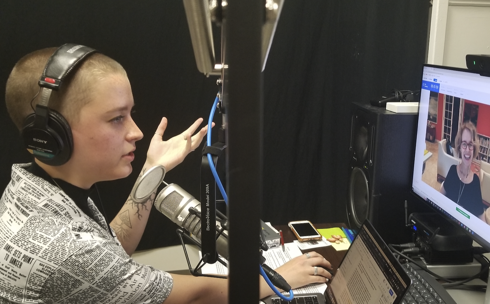
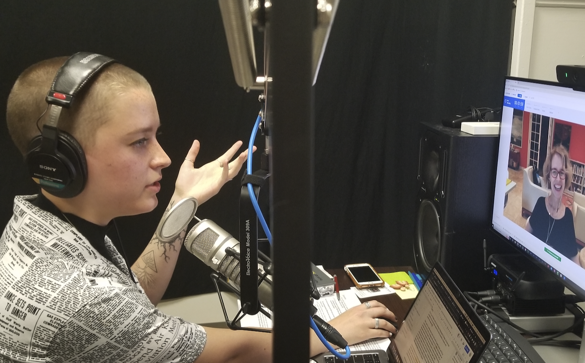

It all began with an inclusive design course proposal I was co-authoring during the summer of 2022 with Dr. Jessica FitzPatrick (who directs the Digital Narrative and Interactive Design major). Leading up to my internship to do this work, we were lining up field interviews to get experienced practitioners’ and researchers’ input. At the same time, we were reading responses to a survey we made regarding our course proposal. Many students who responded said they wished they could take the course now, or that they’d be graduated by the time it gets passed. Course proposals, it turns out, take a long time to get approved.
So I suggested to Dr. Fitz, (not knowing just how much it would actually take), “Why don't we record these field interviews and make an introductory podcast resource for newcomers to inclusive design?” That way, anyone, Pitt student or not, could learn new ways to make their designs more accessible and inclusive.
We’d build a team of six to make it happen (Dr. Fitz as our executive producer, me as host and producer, Ashton McCool as episode sound designer, Chloe Dahan as supplement sound designer and web developer, Emily Kuntz as producer, and Shivangi “Teddy” Tiwari as transcriber).
It would be fun and conversational, and it would define all the jargon the tech field is so notorious for. We would practice what we preach in terms of accessibility and inclusion; we’d have a values statement, transcripts, image description documents, and a resource library to supplement the conversation with routes to continued learning. There’d be a space for community engagement through crowdsourced questions and a show email to tell us how we’re doing/where we could make improvements to our practices.
We’d even build the project with maintenence in mind, recognizing sustainability of projects as key to design justice. We’d also understand the importance of the show being guided by different lived experiences. So we’d build the structures to allow it to become a long term DEI project at Pitt, with students taking over from one another!
And from April 2022 to April 2023, we did just that. (Starting fall of 2023, I will be interacting with the show purely from a listener perspective, and I could not be more excited to watch this project continue to grow!) Listen to the show on Spotify.


 
